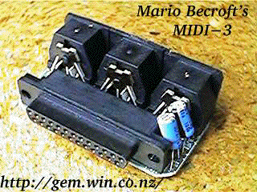
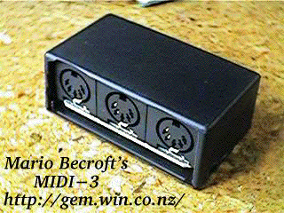

|
|
15.4.2 Midi3 Interface
Midi3 Interface for Atari ST Computers
The 3 MIDI output expander for Atari ST
MIDI-3 is a 3 MIDI output expander for use with music sequencer
programs such as Notator and Cubase on Atari ST computers. It is
completely compatible with the C-LAB EXPORT (which is no longer
available) and connects to the computer's serial (modem) port.
Features:
 
Developer contact: Mario Becroft <mb@gem.win.co.nz>
|
|
|